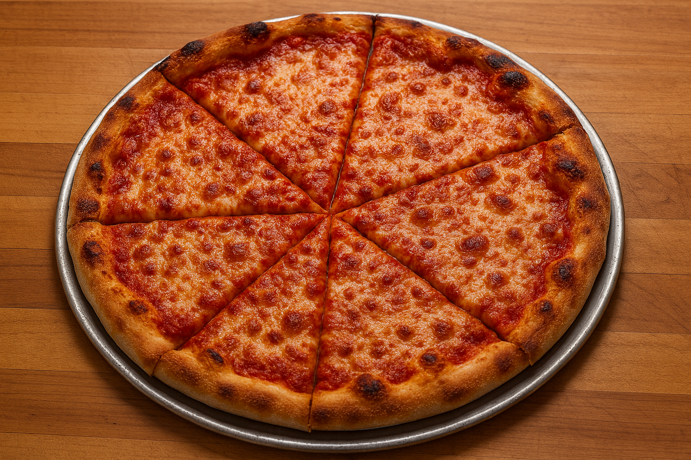

Pizza

Return Home
Description:
An authentic New York style pizza you are sure to enjoy. All parts are from scratch.
Ingredients:
This Goes in Dough Goes Out (enough for two pizzas)
- 16 oz bread flour (about 3¼ cups)
- 3 tsp kosher salt
- ½ tsp active dry yeast
- 1¼ cups ice water
- 1 tbsp vegetable oil
Super Sauce Ingredients
- 1 (28 oz) can whole tomatoes
- 2 garlic cloves
- 1 tsp dried oregano
- ½ tsp dried basil
- ¼ tsp red pepper flakes
- ½ tsp sugar
- Salt to taste
Tremendous Toppings:
- 8 oz low-moisture whole-milk mozzarella, shredded
- Optional: pepperoni, mushrooms, onions, bell peppers
Instructions
- Make the Dough:
in a food processor, pulse flour, sugar, salt, and yeast.
Slowly drizzle in ice water and oil until a sticky dough forms.
Knead on an oiled surface for 2–4 minutes until smooth.
Place in an oiled bowl, cover, and refrigerate overnight.
- Prepare the Sauce:
Blend tomatoes, garlic, oregano, basil, red pepper flakes, sugar, and salt until smooth.
Simmer gently for 20–30 minutes to deepen flavor.
- Shape the Dough:
Divide dough into 2 balls. Let rest at room temp for 1 hour.
Stretch each ball into a 14-inch round, leaving a thicker edge.
- Bake the Pizza:
Preheat oven to 550°F (or highest setting) with a pizza stone inside.
Dust a pizza peel or baking sheet with semolina flour.
Add sauce and cheese to the dough.
Slide onto the stone and bake for 10–12 minutes until bubbly and golden.
- Serve:
Let cool slightly, slice into wedges, and enjoy that NYC fold! 🗽
Return Home